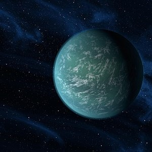

Kepler22b
 Kepler-22 b
Kepler-22 b est une exoplanète en orbite autour de Kepler-22, une étoile de la séquence principale et de
type spectral
G5, semblable au Soleil mais de métallicité moitié moindre, située à environ ~638 a.l. (~196 pc) du
Système solaire
dans la constellation du Cygne. Il s'agit de la première planète découverte par le télescope spatial
Kepler dans la zone
habitable d'une naine jaune.
19h 16m 52.193s, +47° 53′ 03.96″
Etoile : Kepler-22 Naine jaune G5
Température : 22°c
Diamètre : 30.225 km
Distance : 619.4 al
Critère Habitabilité : 0.71/1
Découverte : 2011
Acheter: XXX.XX₿
Plage Agréable ⭐⭐⭐⭐ Post by User1234
zreyoirbogi ey ⭐⭐⭐⭐⭐ Post by User1234
Très sympatique ⭐⭐⭐⭐⭐ Post by
User1234
Reposant ⭐⭐⭐⭐ Post by User1234
yrl!! jfhg ⭐⭐⭐⭐⭐ Post by User1234
jfhpp ?§ ⭐⭐⭐ Post by User1234